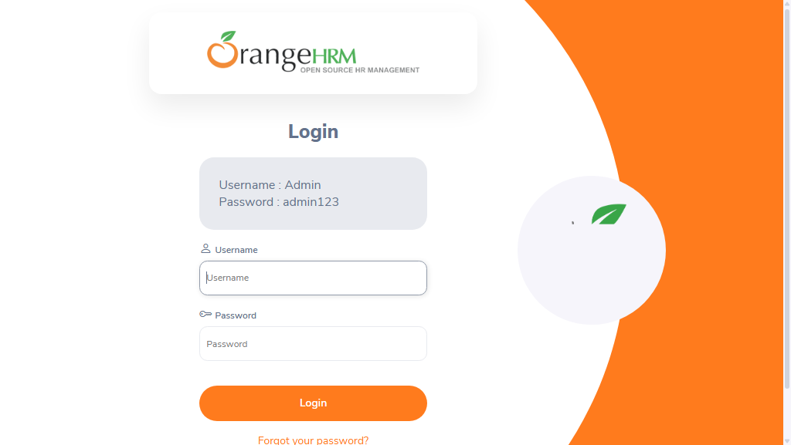

-
sampleTest_user1_20-42-49
8:42:49 PM / 00:00:12:674 Fail
sampleTest_user1_20-42-49
08.30.2026 8:42:49 PM 08.30.2026 8:43:02 PM 00:00:12:674 · #test-id=2Status Timestamp Details Skip 8:43:02 PM Test Skipped Fail 8:43:02 PM Info 8:43:02 PM 📂 Logs: Info 8:43:02 PM 📄 sampleTest_user1_20-42-49.log -
sampleTest1_user1_20-42-49
8:42:49 PM / 00:00:12:744 Fail
sampleTest1_user1_20-42-49
08.30.2026 8:42:49 PM 08.30.2026 8:43:02 PM 00:00:12:744 · #test-id=1Status Timestamp Details Skip 8:43:02 PM Test Skipped Fail 8:43:02 PM Info 8:43:02 PM 📂 Logs: Info 8:43:02 PM 📄 sampleTest1_user1_20-42-49.log -
sampleTest2_user1_20-42-49
8:42:49 PM / 00:00:12:672 Fail
sampleTest2_user1_20-42-49
08.30.2026 8:42:49 PM 08.30.2026 8:43:02 PM 00:00:12:672 · #test-id=3Status Timestamp Details Skip 8:43:02 PM Test Skipped Fail 8:43:02 PM -
sampleTest3_user1_20-42-49
8:42:49 PM / 00:00:12:456 Fail
sampleTest3_user1_20-42-49
08.30.2026 8:42:49 PM 08.30.2026 8:43:02 PM 00:00:12:456 · #test-id=4Status Timestamp Details Skip 8:43:02 PM Test Skipped Fail 8:43:02 PM -
sampleTest2_user1_20-43-06
8:43:06 PM / 00:00:15:877 Fail
sampleTest2_user1_20-43-06
08.30.2026 8:43:06 PM 08.30.2026 8:43:22 PM 00:00:15:877 · #test-id=5Status Timestamp Details Skip 8:43:22 PM Test Skipped Fail 8:43:22 PM -
sampleTest_user1_20-43-06
8:43:06 PM / 00:00:15:403 Fail
sampleTest_user1_20-43-06
08.30.2026 8:43:06 PM 08.30.2026 8:43:21 PM 00:00:15:403 · #test-id=6Status Timestamp Details Skip 8:43:21 PM Test Skipped Fail 8:43:21 PM Info 8:43:21 PM 📂 Logs: Info 8:43:21 PM 📄 sampleTest_user1_20-43-06.log -
sampleTest1_user1_20-43-06
8:43:06 PM / 00:00:15:306 Fail
sampleTest1_user1_20-43-06
08.30.2026 8:43:06 PM 08.30.2026 8:43:21 PM 00:00:15:306 · #test-id=7Status Timestamp Details Skip 8:43:21 PM Test Skipped Fail 8:43:21 PM Info 8:43:21 PM 📂 Logs: Info 8:43:21 PM 📄 sampleTest1_user1_20-43-06.log -
sampleTest3_user1_20-43-06
8:43:06 PM / 00:00:14:792 Fail
sampleTest3_user1_20-43-06
08.30.2026 8:43:06 PM 08.30.2026 8:43:21 PM 00:00:14:792 · #test-id=8Status Timestamp Details Skip 8:43:21 PM Test Skipped Fail 8:43:21 PM -
sampleTest2_user1_20-43-24
8:43:24 PM / 00:00:16:064 Fail
sampleTest2_user1_20-43-24
08.30.2026 8:43:24 PM 08.30.2026 8:43:40 PM 00:00:16:064 · #test-id=9Status Timestamp Details Fail 8:43:40 PM -
sampleTest1_user1_20-43-25
8:43:25 PM / 00:00:15:480 Fail
sampleTest1_user1_20-43-25
08.30.2026 8:43:25 PM 08.30.2026 8:43:40 PM 00:00:15:480 · #test-id=10Status Timestamp Details Fail 8:43:40 PM Info 8:43:40 PM 📂 Logs: Info 8:43:40 PM 📄 sampleTest1_user1_20-43-25.log -
sampleTest_user1_20-43-25
8:43:25 PM / 00:00:16:029 Fail
sampleTest_user1_20-43-25
08.30.2026 8:43:25 PM 08.30.2026 8:43:41 PM 00:00:16:029 · #test-id=11Status Timestamp Details Fail 8:43:41 PM Info 8:43:41 PM 📂 Logs: Info 8:43:41 PM 📄 sampleTest_user1_20-43-25.log -
sampleTest3_user1_20-43-26
8:43:26 PM / 00:00:14:814 Fail
sampleTest3_user1_20-43-26
08.30.2026 8:43:26 PM 08.30.2026 8:43:40 PM 00:00:14:814 · #test-id=12Status Timestamp Details Fail 8:43:40 PM -
sampleTest_user2_20-43-44
8:43:44 PM / 00:00:16:102 Fail
sampleTest_user2_20-43-44
08.30.2026 8:43:44 PM 08.30.2026 8:44:00 PM 00:00:16:102 · #test-id=13Status Timestamp Details Skip 8:44:00 PM Test Skipped Fail 8:44:00 PM Info 8:44:00 PM 📂 Logs: Info 8:44:00 PM 📄 sampleTest_user2_20-43-44.log -
sampleTest3_user2_20-43-44
8:43:44 PM / 00:00:15:623 Fail
sampleTest3_user2_20-43-44
08.30.2026 8:43:44 PM 08.30.2026 8:44:00 PM 00:00:15:623 · #test-id=14Status Timestamp Details Skip 8:44:00 PM Test Skipped Fail 8:44:00 PM -
sampleTest2_user2_20-43-44
8:43:44 PM / 00:00:15:456 Fail
sampleTest2_user2_20-43-44
08.30.2026 8:43:44 PM 08.30.2026 8:44:00 PM 00:00:15:456 · #test-id=15Status Timestamp Details Skip 8:44:00 PM Test Skipped Fail 8:44:00 PM -
sampleTest1_user2_20-43-45
8:43:45 PM / 00:00:14:132 Fail
sampleTest1_user2_20-43-45
08.30.2026 8:43:45 PM 08.30.2026 8:43:59 PM 00:00:14:132 · #test-id=16Status Timestamp Details Skip 8:43:59 PM Test Skipped Fail 8:43:59 PM Info 8:43:59 PM 📂 Logs: Info 8:43:59 PM 📄 sampleTest1_user2_20-43-45.log -
sampleTest1_user2_20-44-00
8:44:00 PM / 00:00:18:659 Fail
sampleTest1_user2_20-44-00
08.30.2026 8:44:00 PM 08.30.2026 8:44:19 PM 00:00:18:659 · #test-id=17Status Timestamp Details Skip 8:44:19 PM Test Skipped Fail 8:44:19 PM Info 8:44:19 PM 📂 Logs: Info 8:44:19 PM 📄 sampleTest1_user2_20-44-00.log -
sampleTest3_user2_20-44-02
8:44:02 PM / 00:00:16:581 Fail
sampleTest3_user2_20-44-02
08.30.2026 8:44:02 PM 08.30.2026 8:44:18 PM 00:00:16:581 · #test-id=18Status Timestamp Details Skip 8:44:18 PM Test Skipped Fail 8:44:18 PM -
sampleTest2_user2_20-44-02
8:44:02 PM / 00:00:15:923 Fail
sampleTest2_user2_20-44-02
08.30.2026 8:44:02 PM 08.30.2026 8:44:18 PM 00:00:15:923 · #test-id=19Status Timestamp Details Skip 8:44:18 PM Test Skipped Fail 8:44:18 PM -
sampleTest_user2_20-44-04
8:44:04 PM / 00:00:14:341 Fail
sampleTest_user2_20-44-04
08.30.2026 8:44:04 PM 08.30.2026 8:44:18 PM 00:00:14:341 · #test-id=20Status Timestamp Details Skip 8:44:18 PM Test Skipped Fail 8:44:18 PM Info 8:44:18 PM 📂 Logs: Info 8:44:18 PM 📄 sampleTest_user2_20-44-04.log -
sampleTest2_user2_20-44-20
8:44:20 PM / 00:00:17:081 Fail
sampleTest2_user2_20-44-20
08.30.2026 8:44:20 PM 08.30.2026 8:44:37 PM 00:00:17:081 · #test-id=21Status Timestamp Details Fail 8:44:37 PM -
sampleTest_user2_20-44-21
8:44:21 PM / 00:00:16:629 Fail
sampleTest_user2_20-44-21
08.30.2026 8:44:21 PM 08.30.2026 8:44:37 PM 00:00:16:629 · #test-id=22Status Timestamp Details Fail 8:44:37 PM Info 8:44:37 PM 📂 Logs: Info 8:44:37 PM 📄 sampleTest_user2_20-44-21.log -
sampleTest3_user2_20-44-21
8:44:21 PM / 00:00:16:728 Fail
sampleTest3_user2_20-44-21
08.30.2026 8:44:21 PM 08.30.2026 8:44:37 PM 00:00:16:728 · #test-id=23Status Timestamp Details Fail 8:44:37 PM -
sampleTest1_user2_20-44-23
8:44:23 PM / 00:00:13:738 Fail
sampleTest1_user2_20-44-23
08.30.2026 8:44:23 PM 08.30.2026 8:44:37 PM 00:00:13:738 · #test-id=24Status Timestamp Details Fail 8:44:37 PM Info 8:44:37 PM 📂 Logs: Info 8:44:37 PM 📄 sampleTest1_user2_20-44-23.log -
sampleTest5_user1_20-44-40
8:44:40 PM / 00:00:17:338 Fail
sampleTest5_user1_20-44-40
08.30.2026 8:44:40 PM 08.30.2026 8:44:57 PM 00:00:17:338 · #test-id=25Status Timestamp Details Skip 8:44:57 PM Test Skipped Fail 8:44:57 PM -
sampleTest4_user1_20-44-40
8:44:40 PM / 00:00:17:170 Fail
sampleTest4_user1_20-44-40
08.30.2026 8:44:40 PM 08.30.2026 8:44:57 PM 00:00:17:170 · #test-id=26Status Timestamp Details Skip 8:44:57 PM Test Skipped Fail 8:44:57 PM -
verifyLoginTest1_user1_20-44-40
8:44:40 PM / 00:00:17:117 Fail
verifyLoginTest1_user1_20-44-40
08.30.2026 8:44:40 PM 08.30.2026 8:44:57 PM 00:00:17:117 · #test-id=27Status Timestamp Details Skip 8:44:57 PM Test Skipped Fail 8:44:57 PM Info 8:44:57 PM 📸 Screenshots: Info 8:44:57 PM 
-
verifyLoginTest_{COL1=ONE}_20-44-43
8:44:43 PM / 00:00:13:767 Fail
verifyLoginTest_{COL1=ONE}_20-44-43
08.30.2026 8:44:43 PM 08.30.2026 8:44:57 PM 00:00:13:767 · #test-id=28Status Timestamp Details Skip 8:44:57 PM Test Skipped Fail 8:44:57 PM Info 8:44:57 PM 📂 Logs: Info 8:44:57 PM 📄 verifyLoginTest_{COL1=ONE}_20-44-43.log Info 8:44:57 PM 📸 Screenshots: Info 8:44:57 PM 
-
sampleTest5_user1_20-44-59
8:44:59 PM / 00:00:17:590 Fail
sampleTest5_user1_20-44-59
08.30.2026 8:44:59 PM 08.30.2026 8:45:16 PM 00:00:17:590 · #test-id=29Status Timestamp Details Skip 8:45:16 PM Test Skipped Fail 8:45:16 PM -
verifyLoginTest_{COL1=ONE}_20-44-59
8:44:59 PM / 00:00:16:178 Fail
verifyLoginTest_{COL1=ONE}_20-44-59
08.30.2026 8:44:59 PM 08.30.2026 8:45:15 PM 00:00:16:178 · #test-id=30Status Timestamp Details Skip 8:45:15 PM Test Skipped Fail 8:45:15 PM Info 8:45:15 PM 📂 Logs: Info 8:45:15 PM 📄 verifyLoginTest_{COL1=ONE}_20-44-59.log Info 8:45:15 PM 📸 Screenshots: Info 8:45:15 PM 
-
sampleTest4_user1_20-45-00
8:45:00 PM / 00:00:15:767 Fail
sampleTest4_user1_20-45-00
08.30.2026 8:45:00 PM 08.30.2026 8:45:16 PM 00:00:15:767 · #test-id=31Status Timestamp Details Skip 8:45:16 PM Test Skipped Fail 8:45:16 PM -
verifyLoginTest1_user1_20-45-01
8:45:01 PM / 00:00:16:162 Fail
verifyLoginTest1_user1_20-45-01
08.30.2026 8:45:01 PM 08.30.2026 8:45:17 PM 00:00:16:162 · #test-id=32Status Timestamp Details Skip 8:45:17 PM Test Skipped Fail 8:45:17 PM Info 8:45:17 PM 📸 Screenshots: Info 8:45:17 PM 
-
verifyLoginTest_{COL1=ONE}_20-45-16
8:45:16 PM / 00:00:12:689 Fail
verifyLoginTest_{COL1=ONE}_20-45-16
08.30.2026 8:45:16 PM 08.30.2026 8:45:29 PM 00:00:12:689 · #test-id=33Status Timestamp Details Fail 8:45:29 PM Info 8:45:29 PM 📂 Logs: Info 8:45:29 PM 📄 verifyLoginTest_{COL1=ONE}_20-45-16.log Info 8:45:29 PM 📸 Screenshots: Info 8:45:29 PM 
-
sampleTest4_user1_20-45-19
8:45:19 PM / 00:00:16:636 Fail
sampleTest4_user1_20-45-19
08.30.2026 8:45:19 PM 08.30.2026 8:45:36 PM 00:00:16:636 · #test-id=34Status Timestamp Details Fail 8:45:36 PM -
sampleTest5_user1_20-45-19
8:45:19 PM / 00:00:16:638 Fail
sampleTest5_user1_20-45-19
08.30.2026 8:45:19 PM 08.30.2026 8:45:36 PM 00:00:16:638 · #test-id=35Status Timestamp Details Fail 8:45:36 PM -
verifyLoginTest1_user1_20-45-21
8:45:21 PM / 00:00:15:565 Fail
verifyLoginTest1_user1_20-45-21
08.30.2026 8:45:21 PM 08.30.2026 8:45:37 PM 00:00:15:565 · #test-id=36Status Timestamp Details Fail 8:45:37 PM Info 8:45:37 PM 📸 Screenshots: Info 8:45:37 PM 
-
verifyLoginTest_{COL1=ONEONE}_20-45-30
8:45:30 PM / 00:00:13:317 Fail
verifyLoginTest_{COL1=ONEONE}_20-45-30
08.30.2026 8:45:30 PM 08.30.2026 8:45:44 PM 00:00:13:317 · #test-id=37Status Timestamp Details Skip 8:45:44 PM Test Skipped Fail 8:45:44 PM Info 8:45:44 PM 📂 Logs: Info 8:45:44 PM 📄 verifyLoginTest_{COL1=ONEONE}_20-45-30.log Info 8:45:44 PM 📸 Screenshots: Info 8:45:44 PM 
-
sampleTest4_user2_20-45-37
8:45:37 PM / 00:00:15:309 Fail
sampleTest4_user2_20-45-37
08.30.2026 8:45:37 PM 08.30.2026 8:45:53 PM 00:00:15:309 · #test-id=39Status Timestamp Details Skip 8:45:53 PM Test Skipped Fail 8:45:53 PM -
sampleTest5_user2_20-45-37
8:45:37 PM / 00:00:15:706 Fail
sampleTest5_user2_20-45-37
08.30.2026 8:45:37 PM 08.30.2026 8:45:53 PM 00:00:15:706 · #test-id=38Status Timestamp Details Skip 8:45:53 PM Test Skipped Fail 8:45:53 PM -
verifyLoginTest1_user2_20-45-40
8:45:40 PM / 00:00:14:174 Fail
verifyLoginTest1_user2_20-45-40
08.30.2026 8:45:40 PM 08.30.2026 8:45:54 PM 00:00:14:174 · #test-id=40Status Timestamp Details Skip 8:45:54 PM Test Skipped Fail 8:45:54 PM Info 8:45:54 PM 📸 Screenshots: Info 8:45:54 PM 
-
verifyLoginTest_{COL1=ONEONE}_20-45-45
8:45:45 PM / 00:00:12:454 Fail
verifyLoginTest_{COL1=ONEONE}_20-45-45
08.30.2026 8:45:45 PM 08.30.2026 8:45:57 PM 00:00:12:454 · #test-id=41Status Timestamp Details Skip 8:45:57 PM Test Skipped Fail 8:45:57 PM Info 8:45:57 PM 📂 Logs: Info 8:45:57 PM 📄 verifyLoginTest_{COL1=ONEONE}_20-45-45.log Info 8:45:57 PM 📸 Screenshots: Info 8:45:57 PM 
-
sampleTest4_user2_20-45-54
8:45:54 PM / 00:00:17:236 Fail
sampleTest4_user2_20-45-54
08.30.2026 8:45:54 PM 08.30.2026 8:46:11 PM 00:00:17:236 · #test-id=42Status Timestamp Details Skip 8:46:11 PM Test Skipped Fail 8:46:11 PM -
sampleTest5_user2_20-45-55
8:45:55 PM / 00:00:16:118 Fail
sampleTest5_user2_20-45-55
08.30.2026 8:45:55 PM 08.30.2026 8:46:11 PM 00:00:16:118 · #test-id=43Status Timestamp Details Skip 8:46:11 PM Test Skipped Fail 8:46:11 PM -
verifyLoginTest1_user2_20-45-57
8:45:57 PM / 00:00:16:841 Fail
verifyLoginTest1_user2_20-45-57
08.30.2026 8:45:57 PM 08.30.2026 8:46:14 PM 00:00:16:841 · #test-id=44Status Timestamp Details Skip 8:46:14 PM Test Skipped Fail 8:46:14 PM Info 8:46:14 PM 📸 Screenshots: Info 8:46:14 PM 
-
verifyLoginTest_{COL1=ONEONE}_20-46-00
8:46:00 PM / 00:00:13:630 Fail
verifyLoginTest_{COL1=ONEONE}_20-46-00
08.30.2026 8:46:00 PM 08.30.2026 8:46:14 PM 00:00:13:630 · #test-id=45Status Timestamp Details Fail 8:46:14 PM Info 8:46:14 PM 📂 Logs: Info 8:46:14 PM 📄 verifyLoginTest_{COL1=ONEONE}_20-46-00.log Info 8:46:14 PM 📸 Screenshots: Info 8:46:14 PM 
-
sampleTest5_user2_20-46-13
8:46:13 PM / 00:00:17:836 Fail
sampleTest5_user2_20-46-13
08.30.2026 8:46:13 PM 08.30.2026 8:46:31 PM 00:00:17:836 · #test-id=46Status Timestamp Details Fail 8:46:31 PM -
sampleTest4_user2_20-46-13
8:46:13 PM / 00:00:15:109 Fail
sampleTest4_user2_20-46-13
08.30.2026 8:46:13 PM 08.30.2026 8:46:28 PM 00:00:15:109 · #test-id=47Status Timestamp Details Fail 8:46:28 PM -
verifyLoginTest1_user2_20-46-16
8:46:16 PM / 00:00:15:563 Fail
verifyLoginTest1_user2_20-46-16
08.30.2026 8:46:16 PM 08.30.2026 8:46:32 PM 00:00:15:563 · #test-id=48Status Timestamp Details Fail 8:46:32 PM Info 8:46:32 PM 📸 Screenshots: Info 8:46:32 PM 
-
verifyLoginTest2_user1_20-46-17
8:46:17 PM / 00:00:14:163 Fail
verifyLoginTest2_user1_20-46-17
08.30.2026 8:46:17 PM 08.30.2026 8:46:31 PM 00:00:14:163 · #test-id=49Status Timestamp Details Skip 8:46:31 PM Test Skipped Fail 8:46:31 PM Info 8:46:31 PM 📂 Logs: Info 8:46:31 PM 📄 verifyLoginTest2_user1_20-46-17.log -
verifyLoginTest2_user1_20-46-33
8:46:33 PM / 00:00:12:370 Fail
verifyLoginTest2_user1_20-46-33
08.30.2026 8:46:33 PM 08.30.2026 8:46:45 PM 00:00:12:370 · #test-id=50Status Timestamp Details Skip 8:46:45 PM Test Skipped Fail 8:46:45 PM Info 8:46:45 PM 📂 Logs: Info 8:46:45 PM 📄 verifyLoginTest2_user1_20-46-33.log -
verifyLoginTest2_user1_20-46-47
8:46:47 PM / 00:00:12:250 Fail
verifyLoginTest2_user1_20-46-47
08.30.2026 8:46:47 PM 08.30.2026 8:47:00 PM 00:00:12:250 · #test-id=51Status Timestamp Details Fail 8:47:00 PM Info 8:47:00 PM 📂 Logs: Info 8:47:00 PM 📄 verifyLoginTest2_user1_20-46-47.log -
verifyLoginTest2_user2_20-47-01
8:47:01 PM / 00:00:17:950 Fail
verifyLoginTest2_user2_20-47-01
08.30.2026 8:47:01 PM 08.30.2026 8:47:19 PM 00:00:17:950 · #test-id=52Status Timestamp Details Skip 8:47:19 PM Test Skipped Fail 8:47:19 PM Info 8:47:19 PM 📂 Logs: Info 8:47:19 PM 📄 verifyLoginTest2_user2_20-47-01.log -
verifyLoginTest2_user2_20-47-20
8:47:20 PM / 00:00:12:241 Fail
verifyLoginTest2_user2_20-47-20
08.30.2026 8:47:20 PM 08.30.2026 8:47:33 PM 00:00:12:241 · #test-id=53Status Timestamp Details Skip 8:47:33 PM Test Skipped Fail 8:47:33 PM Info 8:47:33 PM 📂 Logs: Info 8:47:33 PM 📄 verifyLoginTest2_user2_20-47-20.log -
verifyLoginTest2_user2_20-47-33
8:47:33 PM / 00:00:12:459 Fail
verifyLoginTest2_user2_20-47-33
08.30.2026 8:47:33 PM 08.30.2026 8:47:46 PM 00:00:12:459 · #test-id=54Status Timestamp Details Fail 8:47:46 PM Info 8:47:46 PM 📂 Logs: Info 8:47:46 PM 📄 verifyLoginTest2_user2_20-47-33.log
-
org.openqa.selenium.TimeoutException
54 tests
org.openqa.selenium.TimeoutException
54 failed
Started
Aug 30, 2026 08:42:34 PM
Ended
Aug 30, 2026 08:47:48 PM
Tests Passed
0
Tests Failed
54
Tests
Log events
Timeline